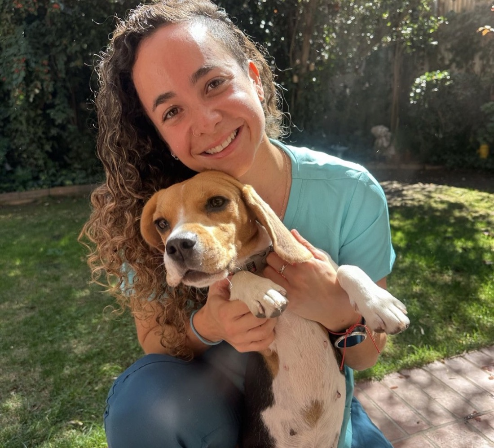

Exámenes de sangre
Muestra tomada en casa: Hemograma, Perfil bioquímico y más.
Consultas, vacunas, exámenes y procedimientos preventivos en el lugar donde tu mascota se siente segura. Sin traslados, sin salas de espera, sin estrés.

Atención preventiva y de rutina, en tu casa.
Muestra tomada en casa: Hemograma, Perfil bioquímico y más.
Séxtuple, Antirrábica, Triple Felina, KC, Leucemia y más.
Evaluación, diagnóstico y tratamiento.
Alimentación, conducta, cachorros y pacientes mayores.
Interna y externa, según su peso, edad y forma de vida.
Identificación permanente y registro oficial.
Dentro de Chile y al extranjero, trámites del SAG.
Cuéntame qué necesitas y te confirmo disponibilidad y valor.
ConsultarTres pasos y listo.
Qué necesita tu mascota, su edad y tu comuna. Te respondo con la disponibilidad.
Elegimos día y hora, y te confirmo el detalle y el valor.
Llego con todo. Al terminar te dejo las indicaciones por escrito.
El traslado y la sala de espera son de las mayores fuentes de ansiedad en perros y gatos. En casa la evaluación es más real y el rato, mucho más amable.
Agendar una visitaAtendiendo mascotas a domicilio desde 2019.
Luna tiene una conexión demasiado genuina con todos los animales. Es la veterinaria de mi perrito hace años. Y la suuuuper recomiendo ♥
Luna ha tratado a mi perrita hace 5 años. Es la vet más atenta y profesional del mundo. Confío en ella a ojos cerrados, y Kai es una perrita sana y feliz. No puedo recomendarla más!
Excelente la atención de Luna. Es amorosa con mis perritas, se toma todo el tiempo necesario para revisarlas y me explica todo.
Si tu comuna no aparece en la lista, escríbeme igual y te confirmo si llego hasta tu dirección.
Lunes a viernes · 08:00 a 20:00 h
Sábado y domingo según disponibilidad, con valor de fin de semana
Sí, sábado y domingo según disponibilidad. La atención de fin de semana tiene un valor diferenciado que se te informa al momento de agendar.
Un espacio tranquilo y bien iluminado, el carnet de vacunas si lo tienes, y la información de tratamientos o alimentos que tu mascota esté recibiendo.
Sí. La muestra se toma en tu domicilio y se procesa en laboratorio. Los resultados se entregan junto con su interpretación clínica.
Se realiza una evaluación clínica y se emite la documentación correspondiente. Los plazos y requisitos varían según el destino, por lo que conviene agendar con anticipación.
El valor depende del servicio y de la comuna. Escríbeme por WhatsApp con lo que necesitas y te envío el detalle antes de agendar.
Escríbeme y coordinamos día y hora. Te respondo lo antes posible.
Las comunas donde atiendo y el horario están más arriba.